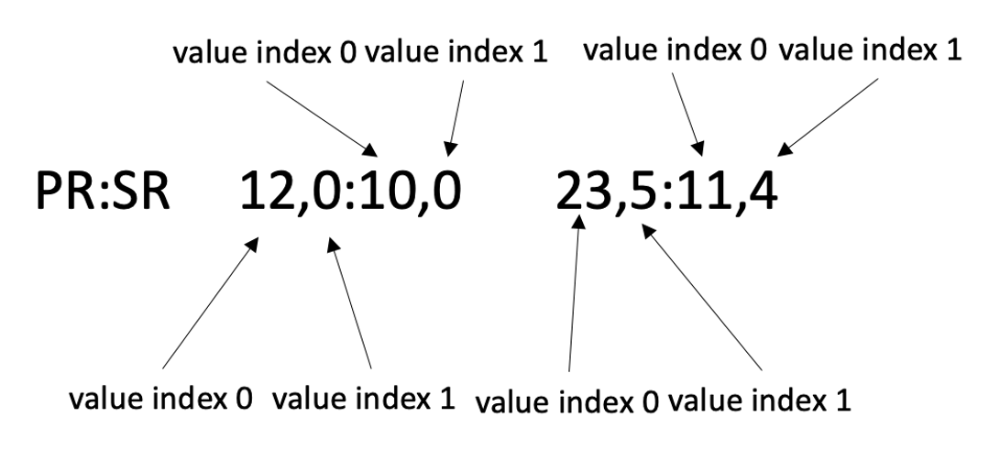

Quick Start¶
This is a short example how to manage VCF files.
After you have read this page, you can
Import Viola package to your script.
Read VCF files to create viola.Vcf object.
Convert VCF files into BEDPE files, with any features you wish, such as INFO fields and FORMAT fields.
Filter SV records by any features, including genomic positions, INFO fields, FILTER fields, and FORMAT fields.
See Also:
In this tutorial, we will only deal with the viola.Vcf class, but many of the features available in this class are also available in the Bedpe, MultiBedpe and MultiVcf classes.
Individual tutorials for classes not covered here are currently under development.
Import Viola to your script¶
In [1]: import viola
Create Vcf object from VCF file.¶
In order to use Viola’s features, you must first run read_vcf to create an viola.Vcf object.
In [2]: url = 'https://raw.githubusercontent.com/dermasugita/ViolaDocs/main/docs/html/_static/tutorial.manta.vcf'
In [3]: vcf = viola.read_vcf(url, variant_caller='manta') # filepath, url, and file-like object are acceptable.
Now you’re ready to perform a number of functions that the Viola package has.
To learn detail data structure of viola.Vcf object, see Viola’s Data Structure.
Viewing the contents of viola.Vcf object¶
You may want to view the content of Vcf objects after creating them. To do so, you have three options.
1) Simply print the object.¶
# The column name 'be' stands for 'breakend'.
In [4]: print(vcf)
INFO=imprecise,svtype,svlen,end,cipos,ciend,cigar,mateid,event,homlen,homseq,svinslen,svinsseq,left_svinsseq,right_svinsseq,contig,bnd_depth,mate_bnd_depth,somatic,somaticscore,junction_somaticscore,inv3,inv5
Documentation of Vcf object ==> https://dermasugita.github.io/ViolaDocs/docs/html/reference/vcf.html
id be1 be2 strand qual svtype
0 test1 chr1:82550461 chr1:82554226 +- None DEL
1 test2 chr1:22814217 chr1:92581132 -- None INV
2 test3 chr1:60567906 chr1:60675941 +- None DEL
3 test4 chr1:69583190 chr1:69590948 +- None DEL
4 test5 chr11:104534877 chr11:104536574 +- None DEL
5 test6_1 chr11:111134697 chr17:26470495 +- None BND
6 test6_2 chr17:26470495 chr11:111134697 -+ None BND
2) Generate BEDPE like pandas.DataFrame.¶
In [5]: vcf_bedpe_like = vcf.to_bedpe_like()
In [6]: print(vcf_bedpe_like)
chrom1 start1 end1 chrom2 start2 end2 name score strand1 strand2
0 chr1 82550460 82550461 chr1 82554225 82554226 test1 None + -
1 chr1 22814216 22814217 chr1 92581131 92581132 test2 None - -
2 chr1 60567905 60567906 chr1 60675940 60675941 test3 None + -
3 chr1 69583189 69583190 chr1 69590947 69590948 test4 None + -
4 chr11 104534876 104534877 chr11 104536573 104536574 test5 None + -
5 chr11 111134696 111134697 chr17 26470494 26470495 test6_1 None + -
6 chr17 26470494 26470495 chr11 111134696 111134697 test6_2 None - +
The way to add INFO, FILTER, and FORMAT to this bedpe-like DataFrame is explained here.
3) Use the get_table() method to get individual tables composing the Vcf object.¶
# the returned value is pd.DataFrame
In [7]: vcf.get_table('positions')
Out[7]:
id chrom1 pos1 chrom2 pos2 ... strand2 ref alt qual svtype
0 test1 chr1 82550461 chr1 82554226 ... - G <DEL> None DEL
1 test2 chr1 22814217 chr1 92581132 ... - T <INV> None INV
2 test3 chr1 60567906 chr1 60675941 ... - T <DEL> None DEL
3 test4 chr1 69583190 chr1 69590948 ... - T <DEL> None DEL
4 test5 chr11 104534877 chr11 104536574 ... - C <DEL> None DEL
5 test6_1 chr11 111134697 chr17 26470495 ... - T T[chr17:26470495[ None BND
6 test6_2 chr17 26470495 chr11 111134697 ... + T ]chr11:111134697]T None BND
[7 rows x 11 columns]
The names of all the tables in vcf are stored in the table_list attribute:
In [8]: vcf.table_list
Out[8]:
['positions',
'filters',
'imprecise',
'svtype',
'svlen',
'end',
'cipos',
'ciend',
'cigar',
'mateid',
'event',
'homlen',
'homseq',
'svinslen',
'svinsseq',
'left_svinsseq',
'right_svinsseq',
'contig',
'bnd_depth',
'mate_bnd_depth',
'somatic',
'somaticscore',
'junction_somaticscore',
'inv3',
'inv5',
'formats',
'contigs_meta',
'alts_meta',
'infos_meta',
'formats_meta',
'filters_meta',
'samples_meta']
You can get any table you want.
In [9]: vcf.get_table('formats_meta') # get header information of FORMAT field
Out[9]:
id number type description
0 PR None Integer Spanning paired-read suppo...
1 SR None Integer Split reads for the ref an...
Export as VCF/BEDPE file¶
You can export VCF/BEDPE files by to_vcf/to_bedpe method.
vcf.to_vcf('/path/to/the/output.vcf')
vcf.to_bedpe('/path/to/the/output.bedpe')
Filter Vcf object¶
Filtering VCF file is an essential step of bioinformatics study. viola.Vcf object provides an intuitive way to filter SV in almost any item.
You have two options for filtering.
1) Filter with queries using filter method¶
Viola has a query system that is easy to understand.
First, let’s look at a couple of examples.
a. Filter with SVTYPE of the INFO field.
syntax: "<INFO name> [<value index>] <operator> <value>"
Please do not omit spaces.
<value indexer> is optional.
The <value indexer> is a 0-origin indexer which allows you to specify which of the comma-separated INFOs, such as CIPOS, should be filtered.
The following syntax can also be used for other INFO.
# filter with svtype.
In [10]: vcf.filter('svtype == DEL')
Out[10]:
INFO=imprecise,svtype,svlen,end,cipos,ciend,cigar,mateid,event,homlen,homseq,svinslen,svinsseq,left_svinsseq,right_svinsseq,contig,bnd_depth,mate_bnd_depth,somatic,somaticscore,junction_somaticscore,inv3,inv5
Documentation of Vcf object ==> https://dermasugita.github.io/ViolaDocs/docs/html/reference/vcf.html
id be1 be2 strand qual svtype
0 test1 chr1:82550461 chr1:82554226 +- None DEL
1 test3 chr1:60567906 chr1:60675941 +- None DEL
2 test4 chr1:69583190 chr1:69590948 +- None DEL
3 test5 chr11:104534877 chr11:104536574 +- None DEL
# example of filtering using <value index>
# The code below means that if the right value of CIPOS (e.g. the value "20" of CIPOS=-10,20) is
# lower than 60, the SV record will be output.
In [11]: using_value_idx = vcf.filter('cipos 1 < 60').to_vcf_like()
In [12]: print(using_value_idx)
chrom1 pos1 id ref alt ... filter info format sample1_N sample1_T
0 chr1 82550461 test1 G <DEL> ... MinSomaticScore IMPRECISE;SVTYPE=DEL;SVLEN... PR:SR 21,0:10,0 43,4:15,3
1 chr1 22814216 test2 T <INV> ... MinSomaticScore IMPRECISE;SVTYPE=INV;SVLEN... PR 24,0 35,5
2 chr1 60567906 test3 T <DEL> ... MinSomaticScore SVTYPE=DEL;SVLEN=-108034;E... PR 23,0 44,6
[3 rows x 11 columns]
In [13]: print(using_value_idx['info'].values)
['IMPRECISE;SVTYPE=DEL;SVLEN=-3764;END=82554225;CIPOS=-51,52;CIEND=-51,52;SOMATIC;SOMATICSCORE=10'
'IMPRECISE;SVTYPE=INV;SVLEN=69766915;END=92581131;CIPOS=-51,51;CIEND=-89,90;SOMATIC;SOMATICSCORE=11;INV5'
'SVTYPE=DEL;SVLEN=-108034;END=60675940;CIPOS=-44,44;CIEND=-38,39;SOMATIC;SOMATICSCORE=18']
Note
What is <value index>?
Some INFO and FORMAT entries are separated by comma to store more than one value.
For example, CIPOS and CIEND entries of INFO field always store two values:
CIPOS=-1,1;CIEND=0,2
<value index> is assigned to such data with 0-origin manner as shown below:
{kind=link}
For another example, the values in FORMAT field of Manta VCF are separated by comma.
{kind=link}
b. Filter with genomic coordinates.
syntax: "<'be1'|'be2'> <chromosome>[:[<start position>]-[<end position>]]"
‘be’ stands for ‘breakend’.
If you skip <start position> with the minus sign kept, you can get all SV record younger than <end position>, and vice versa if you skip <end position>.
Note that <start position>-<end position> specifies genomic coordinates with left-closed, right-open interval, that is, [<start position>, <end position>).
# filter with genomic coordinates.
In [14]: vcf.filter('be1 chr11')
Out[14]:
INFO=imprecise,svtype,svlen,end,cipos,ciend,cigar,mateid,event,homlen,homseq,svinslen,svinsseq,left_svinsseq,right_svinsseq,contig,bnd_depth,mate_bnd_depth,somatic,somaticscore,junction_somaticscore,inv3,inv5
Documentation of Vcf object ==> https://dermasugita.github.io/ViolaDocs/docs/html/reference/vcf.html
id be1 be2 strand qual svtype
0 test5 chr11:104534877 chr11:104536574 +- None DEL
1 test6_1 chr11:111134697 chr17:26470495 +- None BND
In [15]: vcf.filter('be1 !chr1')
Out[15]:
INFO=imprecise,svtype,svlen,end,cipos,ciend,cigar,mateid,event,homlen,homseq,svinslen,svinsseq,left_svinsseq,right_svinsseq,contig,bnd_depth,mate_bnd_depth,somatic,somaticscore,junction_somaticscore,inv3,inv5
Documentation of Vcf object ==> https://dermasugita.github.io/ViolaDocs/docs/html/reference/vcf.html
id be1 be2 strand qual svtype
0 test5 chr11:104534877 chr11:104536574 +- None DEL
1 test6_1 chr11:111134697 chr17:26470495 +- None BND
2 test6_2 chr17:26470495 chr11:111134697 -+ None BND
In [16]: vcf.filter('be2 chr1:69583189-')
Out[16]:
INFO=imprecise,svtype,svlen,end,cipos,ciend,cigar,mateid,event,homlen,homseq,svinslen,svinsseq,left_svinsseq,right_svinsseq,contig,bnd_depth,mate_bnd_depth,somatic,somaticscore,junction_somaticscore,inv3,inv5
Documentation of Vcf object ==> https://dermasugita.github.io/ViolaDocs/docs/html/reference/vcf.html
id be1 be2 strand qual svtype
0 test1 chr1:82550461 chr1:82554226 +- None DEL
1 test2 chr1:22814217 chr1:92581132 -- None INV
2 test4 chr1:69583190 chr1:69590948 +- None DEL
c. Filter with FORMAT table
syntax: "<sample name> <FORMAT name> [<FORMAT index>] <operator> <value>
FORMAT indexer is optional. It is not required when the FORMAT isn’t separated by commas.
FORMAT indexer is 0-origin. Default value is 0.
# The meaning of this code is that if the right value of the PR of sample1_T
# in the FORMAT field (e.g. the value "3" in PR:SR 6,7:8,9 1,3:5,2) is greater than 5,
# the SV records will be returned.
In [17]: vcf.filter('sample1_T PR 1 > 5').to_bedpe_like(add_formats=True)
Out[17]:
chrom1 start1 end1 chrom2 start2 ... strand2 sample1_N_PR_0 sample1_N_PR_1 sample1_T_PR_0 sample1_T_PR_1
0 chr1 60567905 60567906 chr1 60675940 ... - 23 0 44 6
1 chr1 69583189 69583190 chr1 69590947 ... - 21 0 20 12
2 chr11 104534876 104534877 chr11 104536573 ... - 22 0 57 14
[3 rows x 14 columns]
c. Filter with FILTER table
syntax: "[!]<FILTER name>"
When “!” mark is prepended, the SV records excluding <FILTER name> are returned.
In [18]: vcf.filter('PASS').to_bedpe_like(add_filters=True)
Out[18]:
chrom1 start1 end1 chrom2 start2 ... name score strand1 strand2 PASS
0 chr1 69583189 69583190 chr1 69590947 ... test4 None + - True
1 chr11 104534876 104534877 chr11 104536573 ... test5 None + - True
[2 rows x 11 columns]
In [19]: vcf.filter('!PASS').to_bedpe_like(add_filters=True)
Out[19]:
chrom1 start1 end1 chrom2 start2 ... name score strand1 strand2 MinSomaticScore
0 chr1 82550460 82550461 chr1 82554225 ... test1 None + - True
1 chr1 22814216 22814217 chr1 92581131 ... test2 None - - True
2 chr1 60567905 60567906 chr1 60675940 ... test3 None + - True
3 chr11 111134696 111134697 chr17 26470494 ... test6_1 None + - True
4 chr17 26470494 26470495 chr11 111134696 ... test6_2 None - + True
[5 rows x 11 columns]
d. Query can be a list
In [20]: query2_1 = 'svlen < -4000'
In [21]: query2_2 = 'svlen > -10000'
In [22]: vcf2 = vcf.filter([query2_1, query2_2], query_logic='and')
In [23]: result2 = vcf2.to_bedpe_like(custom_infonames=['svtype', 'svlen'])
In [24]: print(result2)
chrom1 start1 end1 chrom2 start2 ... score strand1 strand2 svtype_0 svlen_0
0 chr1 69583189 69583190 chr1 69590947 ... None + - DEL -7757
[1 rows x 12 columns]
You can perform set operations by passing expressions to query_logic.
In [25]: query3_1 = 'svtype == DEL'
In [26]: query3_2 = 'svtype == BND'
In [27]: query3_3 = 'somaticscore > 20'
# (query3_1 or query3_2) and (query3_3)
In [28]: vcf3 = vcf.filter([query3_1, query3_2, query3_3], query_logic='(0 | 1) & 2')
In [29]: print(vcf3.to_bedpe_like(custom_infonames=['svtype', 'somaticscore']))
chrom1 start1 end1 chrom2 start2 ... score strand1 strand2 svtype_0 somaticscore_0
0 chr1 69583189 69583190 chr1 69590947 ... None + - DEL 47
1 chr11 104534876 104534877 chr11 104536573 ... None + - DEL 38
2 chr11 111134696 111134697 chr17 26470494 ... None + - BND 24
3 chr17 26470494 26470495 chr11 111134696 ... None - + BND 24
[4 rows x 12 columns]
2) Filter with SV ID using filter_by_id method¶
Vcf.filter is very useful, but in some situation, you may have to filter with much more complex criteria.
In such cases we recommend to use Vcf.filter_by_id method.
Suppose you obtained the list of SV id, such as ['test2', 'test4'], as a result of quite complex criterion.
In this case, your code should be:
In [30]: vcf.filter_by_id(['test2', 'test4'])
Out[30]:
INFO=imprecise,svtype,svlen,end,cipos,ciend,cigar,mateid,event,homlen,homseq,svinslen,svinsseq,left_svinsseq,right_svinsseq,contig,bnd_depth,mate_bnd_depth,somatic,somaticscore,junction_somaticscore,inv3,inv5
Documentation of Vcf object ==> https://dermasugita.github.io/ViolaDocs/docs/html/reference/vcf.html
id be1 be2 strand qual svtype
0 test2 chr1:22814217 chr1:92581132 -- None INV
1 test4 chr1:69583190 chr1:69590948 +- None DEL